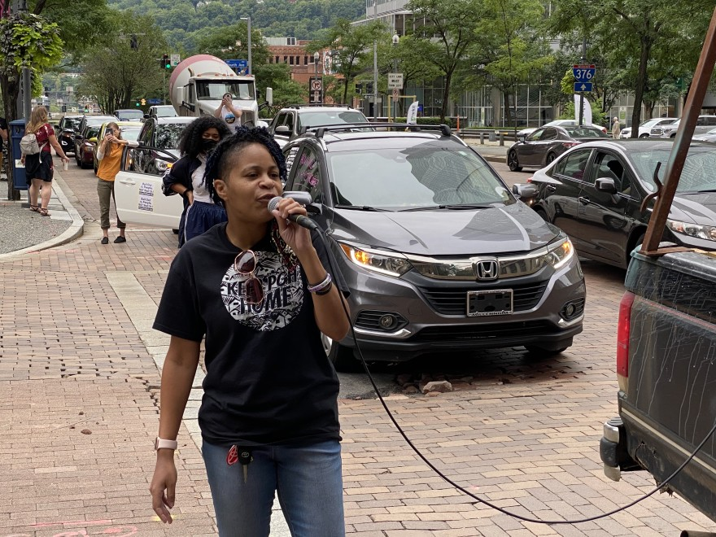
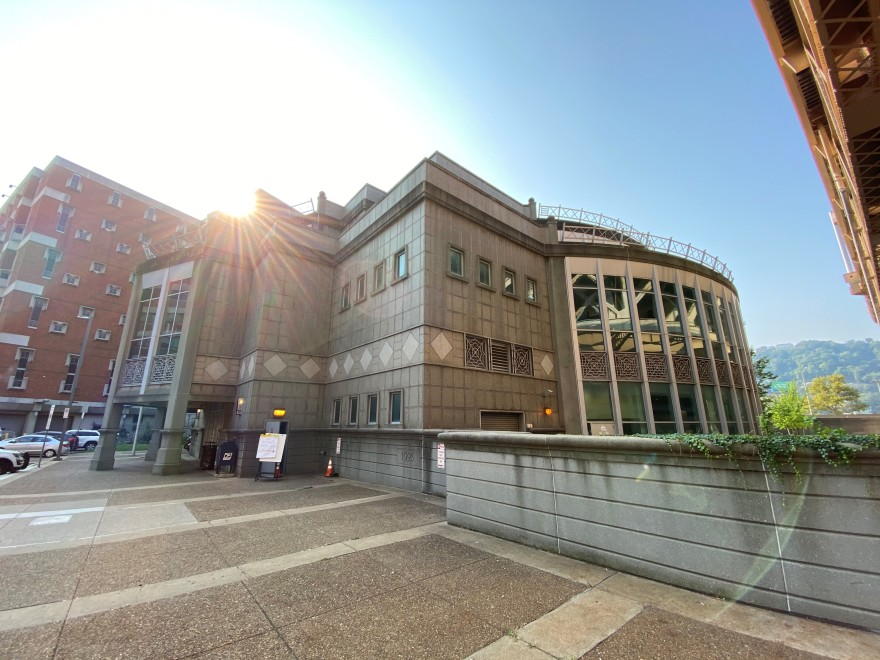
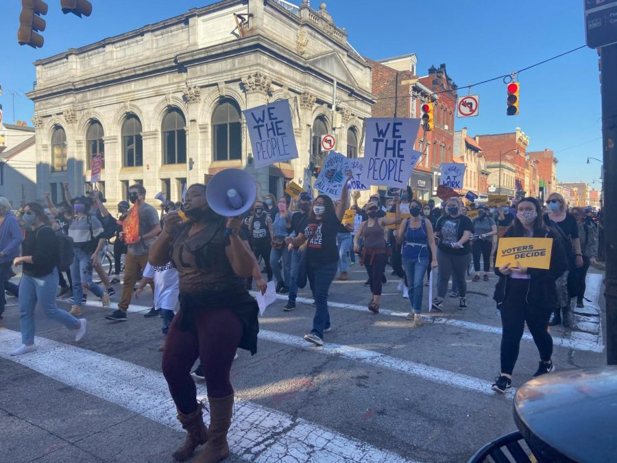
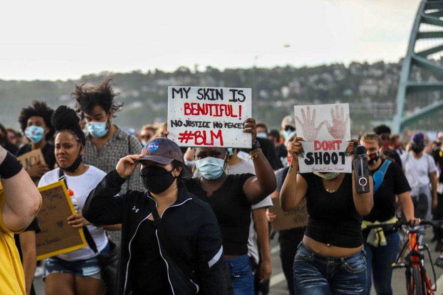
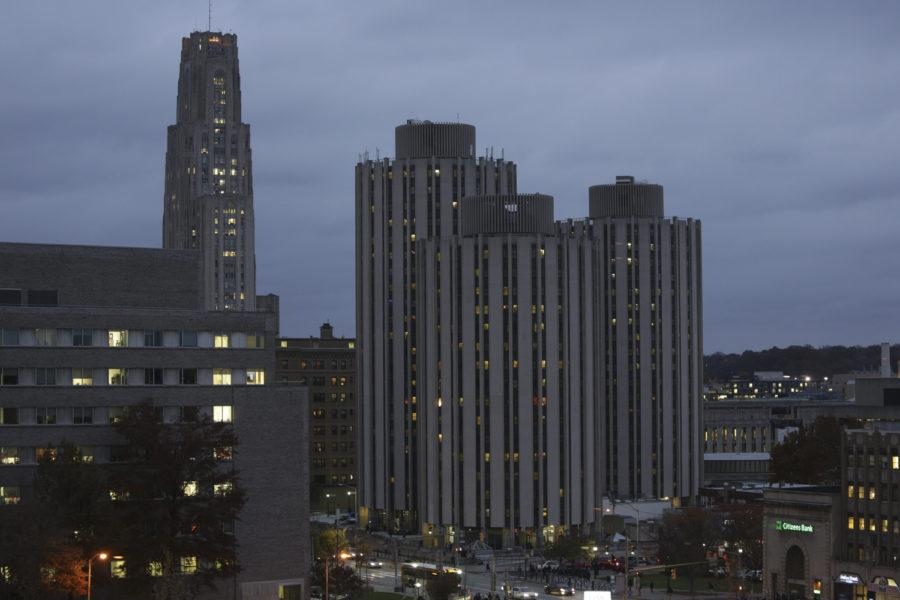
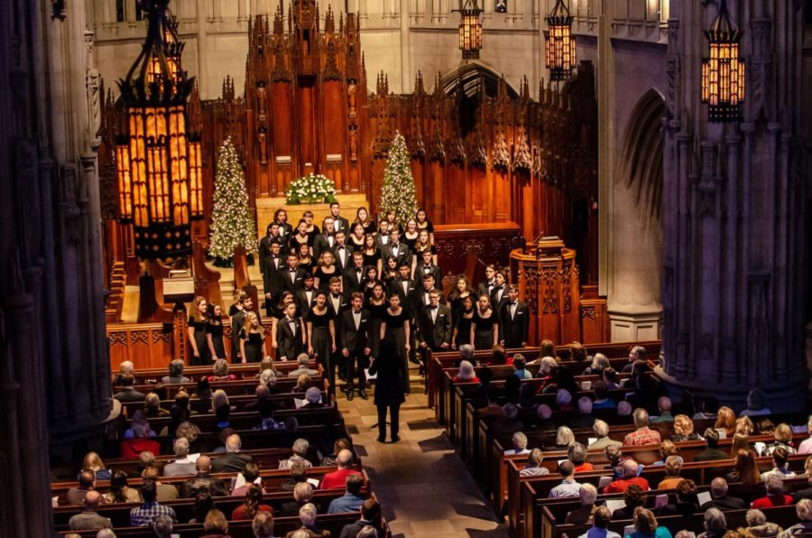
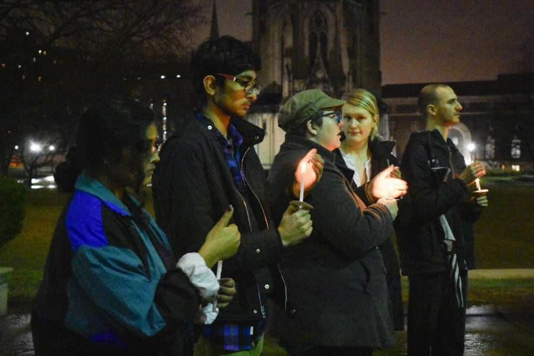
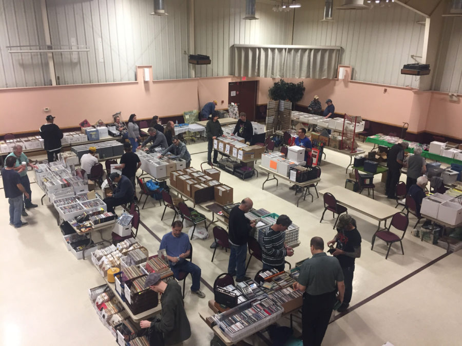

90.5 WESA
90.5 WESA is Pittsburgh’s local NPR station. During my internship at the station, I was a Newsroom Production Assistant. Here are the stories I worked on:

Pittsburgh Housing Advocates ask for Eviction Moratorium Extension
A cacophony of car horns filled Downtown Pittsburgh and a handful of other city neighborhoods as demonstrators called for the extension of a statewide eviction moratorium.

Most Charges Held for Trial Against Three Activists Accused in Downtown Bar Protest
(Sept. 25, 2020) Three local activists are heading to trial to face charges in connection with a June protest at 941 Saloon downtown.
The Pitt News
The Pitt News is the University of Pittsburgh’s student newspaper. I worked there from 2018-2021 and held a variety of positions, including news reporter, Culture Editor, Assistant News Editor and Managing Editor. Here are some of my articles from when I worked in these jobs:
Vision slate disqualified form SGB elections after sleepless night of hearings
(March 2, 2020) Two Student Government Board committees removed the Vision slate from Tuesday’s SGB elections ballot shortly before 6 a.m., about two hours before polls opened, saying its members violated campaign rules that merit their disqualification.

Pittsburghers take to streets to celebrate Biden victory
(Nov. 7, 2020) Pittsburghers danced and marched in the streets of the City’s South Side neighborhood mid-day Saturday after the 2020 presidential election was called for former Vice President Joe Biden.

Faculty express concerns about Pitt-Outlier partnership
(Dec. 16, 2020) Faculty at Pitt’s Oakland campus will no longer be involved in the University’s partnership with education-technology startup Outlier.

Pitt offers new mandatory anti-racism class for first year students
(Aug. 23, 2020) The University is offering a one-credit, online course on systemic anti-racism and anti-Black racism called Anti-Black Racism: History, Ideology and Resistance beginning this fall.

Students required to shelter in place prior to returning to in-person classes
(July 20, 2020) The University is requiring all students, including those who live off campus, to complete a 14-day shelter-in-place period before attending in-person classes.

Heralding the holidays with the Heinz Chapel Choir
(Dec. 5, 2019) The Heinz Chapel Choir performed their holiday concert “To Make Music in the Heart” Tuesday evening in Heinz Memorial Chapel, the third of six performances in their annual holiday concert series.

Pittsburgh Against Fascism in India holds vigil for victims of Delhi riots
(March 3, 2020) Pittsburgh Against Fascism in India held a candlelight vigil on Monday night to honor the 50 victims of the late February riots in North East Delhi.

Pittsburgh record convention showcases vinyl revival
(May 15, 2019) The most recent Record Convention took place on May 11 at the Sokol Club in the South Side. More than 30 vendors and hundreds of attendees gathered to buy and sell records, CDs, cassette tapes and other music memorabilia.